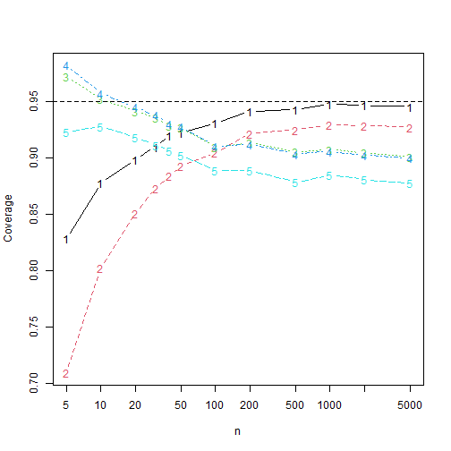

Simulation of confidence intervals.
simulations.RmdSetting up the simulations
We use the dataset bfi from the package
psych together with lavaan to estimate some
realistic factor loadings
and standard deviations
.
model <- c("y =~ A1 + A2 + A3 + A4 + A5")
fit <- lavaan::cfa(model, data = psych::bfi)
coefs <- lavaan::lavInspect(fit, what = "x")
lambda <- abs(c(coefs$lambda * sqrt(as.numeric(coefs$psi))))
sigma <- sqrt(diag(lavaan::lavInspect(fit, what = "x")$theta))We take the absolute value of the lambda vector as the
agreement data contains reverse-coded items.
Comparing confidence intervals coverages and lengths
We compare five confidence intervals, all without transformations.
The adf interval is the asymptotic distribution-free
interval, the ell interval is the interval based on
elliptical distributions and a kurtosis correction, the
ell_par is the elliptical interval assuming a parallel
model. The same comments hold for norm (assuming normal
data) and norm_par (assuming parallel normal data).
library("alphaci")
library("future.apply")
plan(multisession, workers = availableCores() - 2)
set.seed(313)
n_reps <- 10000
k <- 5
latent <- \(n) extraDistr::rlaplace(n) / sqrt(2)
true <- alphaci:::alpha(sigma, lambda)In this simulation we normal error terms and a Laplace-distributed
latent variable. This one has excess kurtosis
,
which caries over in large part to the data. k is the
number of questions ands n_reps is the number of
simulations.
success <- \(ci) true <= ci[2] & true >= ci[1]
len <- \(ci) ci[2] - ci[1]
simulations <- \(n) {
results <- future.apply::future_replicate(n_reps, {
x <- alphaci:::simulate_congeneric(n, k, sigma, lambda, latent = latent)
cis <- rbind(adf = alphaci(x, type = "adf"),
adf_par = alphaci(x, type = "adf", parallel = TRUE),
ell = alphaci(x, type = "elliptical"),
ell_par = alphaci(x, type = "elliptical", parallel = TRUE),
norm = alphaci(x, type = "normal"),
norm_par = alphaci(x, type = "normal", parallel = TRUE)
)
c(cov = apply(cis, 1, success), len = apply(cis, 1, len))
}, future.seed = TRUE)
rowMeans(results)
}Let’s check out the results when .
simulations(10)
#> cov.adf cov.adf_par cov.ell cov.ell_par cov.norm cov.norm_par len.adf len.adf_par
#> 0.8745000 0.7942000 0.9513000 0.9566000 0.9223000 0.9297000 0.7680810 55.3239940
#> len.ell len.ell_par len.norm len.norm_par
#> 1.0238478 1.0499270 0.9113473 0.9342908It appears that the kurtosis corrections work well, at least for small sample size. Let’s see how they perform when increases.
Plotting the coverages, we find, where 1 is
asymptotically distribution-free, 2 is elliptical,
3 is paralell and elliptical, 4 is
normal and 5 is parallel and normal.
matplot(nn, t(results[1:5, ]), xlab = "n", ylab = "Coverage", type = "b",
log = "x")
abline(h = 0.95, lty = 2)
Hence the kurtosis correction intervals have better coverage than the
adf interval when
and outperforms the normal theory intervals for all
.
If this observation is general remains to be seen.